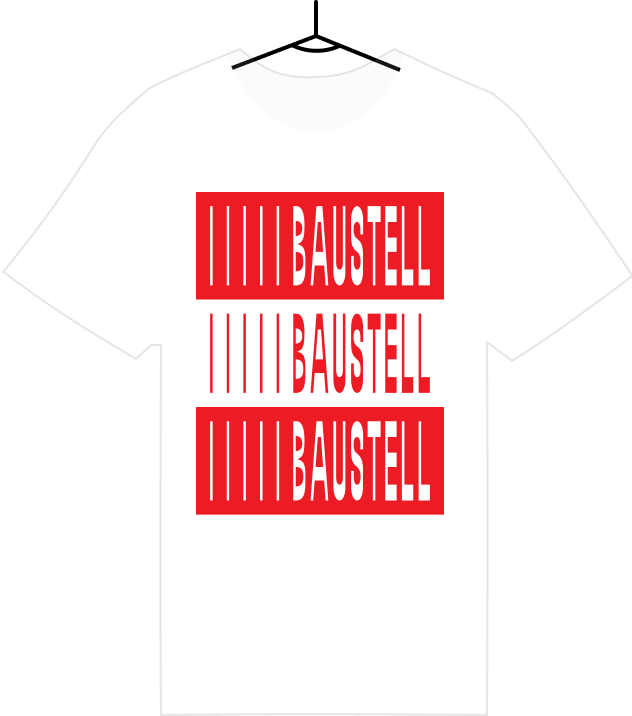

Betreten Erwünscht
Wenn der Grill brennt ist die Baustell offen für alle. Zum Bauen, Arbeiten, Austauschen, Pause Machen, Senfen und viel mehr.
Wenn der Grill brennt ist die Baustell offen für alle. Zum Bauen, Arbeiten, Austauschen, Pause Machen, Senfen und viel mehr.
alles-negativ
The collectiv alles-negativ was founded by Carlo Natter and Aurelian Ammon. They try to combine their multidisciplinary interests in design to explore projects from unexpected angles. The connections between the physical and the digital realms is intriguing to them and they try to find approaches to observe and test how the distinction between virtuality and reality is shifting towards each other.
WEBSITE
The collectiv alles-negativ was founded by Carlo Natter and Aurelian Ammon. They try to combine their multidisciplinary interests in design to explore projects from unexpected angles. The connections between the physical and the digital realms is intriguing to them and they try to find approaches to observe and test how the distinction between virtuality and reality is shifting towards each other.
WEBSITE
Duy Bui
Duy works in installation, photography, film and fictional media. He loves to wander and wonder; always restless in the now, he seeks the in-between and far beyond. His optimism comes from his friends and the stories they tell together.
WEBSITE
Duy works in installation, photography, film and fictional media. He loves to wander and wonder; always restless in the now, he seeks the in-between and far beyond. His optimism comes from his friends and the stories they tell together.
WEBSITE
Adresse
Verein Baustell
Hardgutstrasse 7
8048 Zürich
Im Containerdorf hinten Links
Dariush Mehdiaraghi
Dariush is a passionate developer that loves to create unusual stuff with code especially if it blinks or makes noise.
WEBSITE
Dariush is a passionate developer that loves to create unusual stuff with code especially if it blinks or makes noise.
WEBSITE
Fabian Frey
Als spekulativer Designer beschäftige ich mich mit den Möglichkeitsräumen der nächsten 50 Jahre. Wie leben wir zusammen, gestalten gemeinsam Stadt oder wie können immer globalere Zusammenhänge fassbar gemacht werden.
WEBSITE
Als spekulativer Designer beschäftige ich mich mit den Möglichkeitsräumen der nächsten 50 Jahre. Wie leben wir zusammen, gestalten gemeinsam Stadt oder wie können immer globalere Zusammenhänge fassbar gemacht werden.
WEBSITE
Andreas Bütler
Andreas Bütler is a multidisciplinary designer who strives to create hollistic experiences. He tries to combine the fields of light and movement in space through digital as well as physical solutions.
Andreas Bütler is a multidisciplinary designer who strives to create hollistic experiences. He tries to combine the fields of light and movement in space through digital as well as physical solutions.
Bauen, Päuselen und Senfen
Willkommen auf der Baustell. Hier sind wir alle Freunde.
Willkommen auf der Baustell. Hier sind wir alle Freunde.
Edna Hirsbrunner
Edna likes interdisciplinary work and innovative approaches to design problems. She is interested in the hot spot of interpersonal interactions and experimental use of new technologies. To design for and with people is her goal while keeping sociocultural developments in mind. Besides curiously exploring her surroundings, you can find her shooting analog stories, cooking dinner for friends and climbing beautiful rocks.
WEBSITE
Edna likes interdisciplinary work and innovative approaches to design problems. She is interested in the hot spot of interpersonal interactions and experimental use of new technologies. To design for and with people is her goal while keeping sociocultural developments in mind. Besides curiously exploring her surroundings, you can find her shooting analog stories, cooking dinner for friends and climbing beautiful rocks.
WEBSITE
sowieso
Through its work, sowieso bridges the gap between the digital and the physical world. With physical solutions supported by digital technology soweiso designs and realises innovative experiences in a broad field.
Through its work, sowieso bridges the gap between the digital and the physical world. With physical solutions supported by digital technology soweiso designs and realises innovative experiences in a broad field.

Baustell Unlimited
Bald hier im Internet erwerblich!